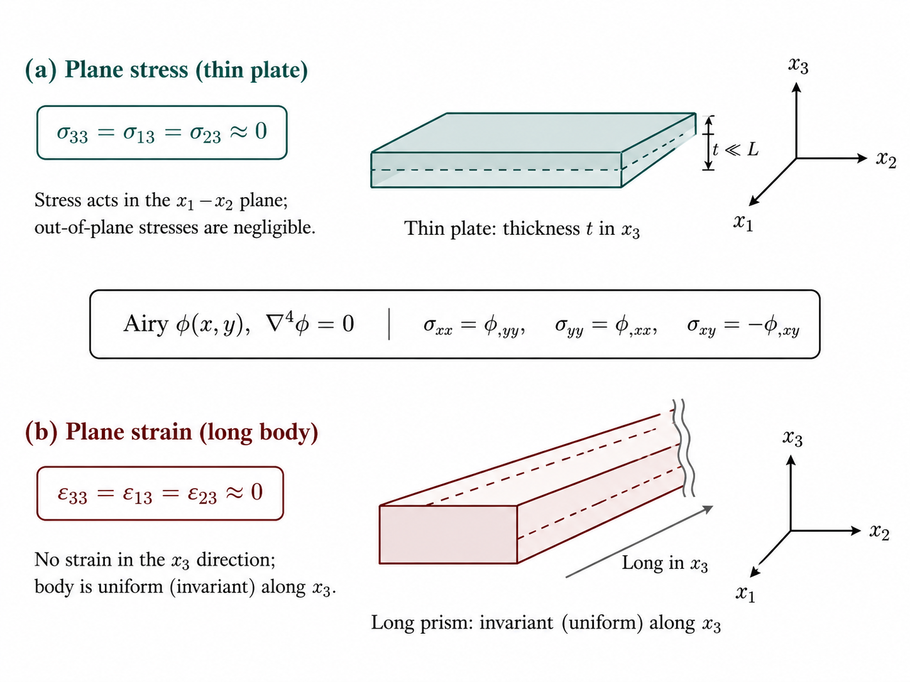
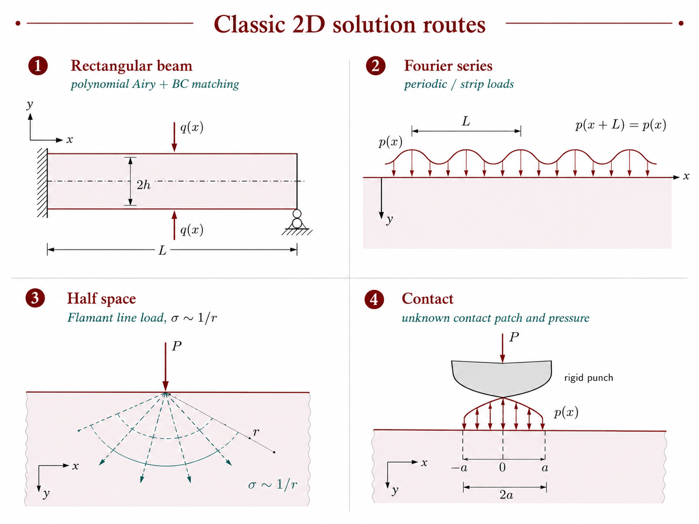
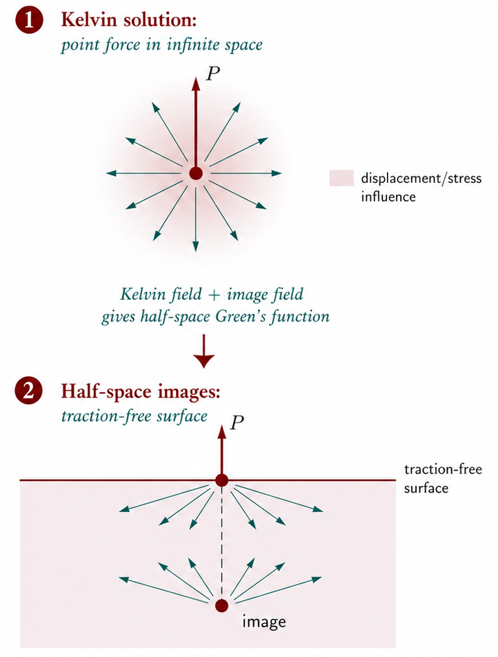
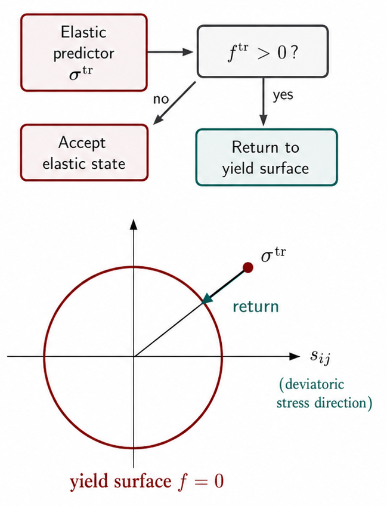

Foundations
One-dimensional and rod problems
Two-dimensional elasticity
Three-dimensional elasticity
Plasticity
Fracture mechanics
Problem-solving workflow
material point \(\mathbf{X}\) maps to \(\mathbf{x}=\mathbf{X}+\mathbf{u}(\mathbf{X})\)

traction \(\mathbf{t}=\boldsymbol{\sigma}\cdot\mathbf{n}\) on a cut plane

linear \(\sigma\)–\(\varepsilon\) law; shaded area = strain-energy density \(u\)

body \(V\); displacement BC on \(S_u\), traction BC on \(S_t\)

fixed end + axial load \(N\) \(\Rightarrow\) extension \(u(x)\)



polar annulus / hole and wedge notch with angle \(2\alpha\)

Kelvin point force \(P\) + image below traction-free surface

Volterra cut, Burgers vector \(\mathbf{b}\), far-field \(\boldsymbol{\sigma}^\infty\)

load past \(\sigma_Y\), unload elastically \(\rightarrow\) permanent \(\varepsilon^p\)

von Mises circle vs. Tresca hexagon in \(\sigma_1\)–\(\sigma_2\) plane

elastic predictor \(\boldsymbol{\sigma}^{\mathrm{tr}}\); return to yield surface if \(f>0\)

center crack \(2a\) in remote tension \(\sigma^\infty\) (Mode I)

Benchmark mindset: Keep an analytic case as a reference when switching to numerics.
Part I. Elasticity
- Introduction
- Tensors
- Hooke's Law
- Fundamental Equations
- 2D Elasticity
- Rectangular Beam
- Fourier Series and Transform
- Fourier Solution
- Half Space
- Contact
- Polar Coordinates
- Wedge and Notch
Part II. Plasticity
- 13. Fundamental Equations of Plasticity
- 14. Graphical Representations
- 15. Tension and Shear
- 16. Plastic Bending
- 18. Hardening Law
- 20. Crystal Plasticity
Part III. Fracture
- 22. Slit-like Crack
- 23. Energy Release Rate
- 24. Linear Elastic Fracture Mechanics
- 25. Elastic Plastic Fracture Mechanics
- 26. Fatigue
Elasticity
\(\sigma,\ \mathbf{u}\)
→
\(\sigma,\ \mathbf{u}\)
Plasticity
\(\varepsilon^{p},\ f=0\)
→
\(\varepsilon^{p},\ f=0\)
Fracture
\(K_{I},\ J\)
\(K_{I},\ J\)